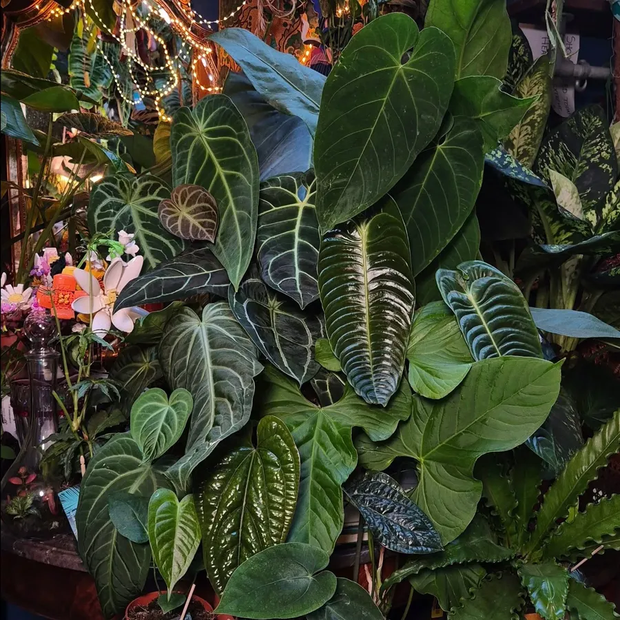
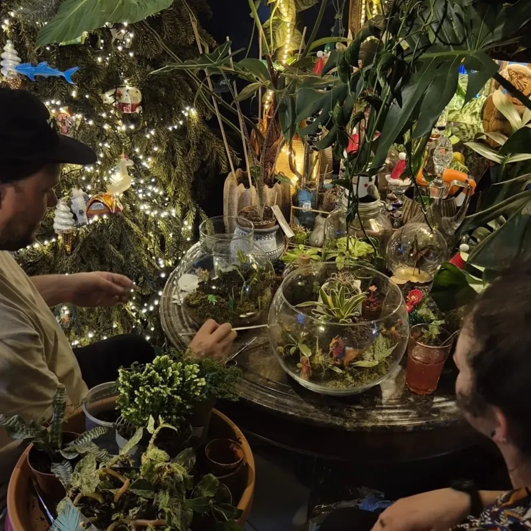

Gemakkelijk, of gemakkelijk te vermoorden.
Klein, groot, groen of kleurrijk. Er zit altijd wel iets tussen dat schoon staat in je living, je kantoor of je kot. En de prijzen vallen goed mee.
- Monstera 'Thai Constellation'€27
- Monstera dubia€17,50
- Monstera 'Burle Marx Flame'€16
- Monstera adansonii variegata€12,50
- Philodendron 'Summer Glory'€39
- Alocasia gageana aurea€24
- Spathiphyllum sensation variegata€34
- Dioscorea discolor€49
- Dieffenbachia 'Big Ben' aureade grote jongen€119
Je zal wel eens verloren lopen.
Dan helpen we je graag weer op weg. Wandel tussen de planten en de potjes, en neem achteraan plaats voor iets om te drinken. Koffie en thee komen in mooie Engelse kopjes.





Workshopke doen?
Kom je groene vingers ontdekken in de Broesse. Tijdens de week, na de uren of op aanvraag.
Boeken kan telefonisch, via WhatsApp of in de winkel.
Boek via WhatsApp


Wie geeft hier nu eigenlijk al die planten water?
Ik. Al sinds begin 2022 sta ik tussen de plantjes in de Baudelostraat. Ik ga zelf op zoek naar de schoonste exemplaren, en help je graag verder met je plantjes.
Op een gewone dag kan je hier verdwalen. Rond de Gentse Feesten niet: dan gaan de plantjes eerst in solden en daarna even met rust.
Het gebouw staat nog recht, de wolken hangen nog steeds aan het plafond en mijn vingers zijn alleen maar groener geworden.Uit een van onze verjaardagsposts


Een oase van rust, en plantjes.
Een oase van rust en plantjes. Supervriendelijke en attente eigenaar met de meest kalmerende stem die je altijd kan helpen met je plantjes! De huislimonade is ook heerlijk. Disclaimer: er is 99% kans dat je Broesse zal verlaten met een nieuwe planten 🌱🥰
Wat een superleuke, hippe plantenwinkel in centrum Gent! Gelukkig woon ik hier niet of ik was zeker bankroet gegaan.. Leuk, klein winkeltje met ruime keuze planten en unieke bloempotten. Gezellig.
Wauw, wat een oase van rust en ontspanning in hartje Gent. Overal waar je kijkt zie je prachtige planten en mooie bloempotten. Met prachtige wolken (van soort watten) met mooie lampjes aan het plafond.
Het is een plantenwinkel en een cafeetje met wolken aan het plafond.

Tot in de Broesse?
Op koopzondag zijn we meestal wel open. De andere zondagen hebben de plantjes ook rust nodig.
9000 Gent